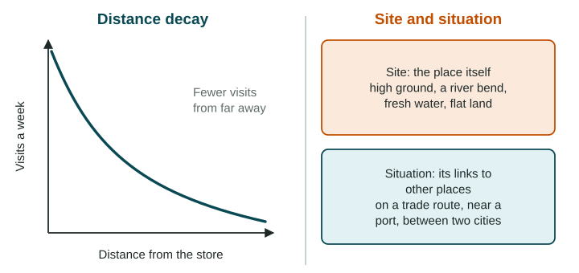

Spatial Concepts
Geographers locate places in two ways: absolutely, with latitude and longitude, and relatively, by what a place is near.
Part 1 · Hook
Why this matters
Part 2 · Before you start
What this builds on
Part 3 · Prerequisite check
Quick check before you start
1. Two towns are each 100 km from a city, but one takes 1 hour to reach and the other 3 hours. Which idea is this?
- Relative distance
- Absolute distance
- Absolute direction
- Elevation
Show the answer
Relative distance is measured in time, cost or ease of travel, not kilometers.
- Correct: Relative distance:
- Absolute distance:
- Absolute direction:
- Elevation:
2. Houses packed around a village square show which pattern?
- Clustering
- Dispersal
- Distortion
- Elevation
Show the answer
Clustering means features are grouped close together.
- Correct: Clustering:
- Dispersal:
- Distortion:
- Elevation:
Part 4 · See it
See it first

Part 5 · Step by step
How it works, step by step
- A place has a good site, such as a sheltered harborit can serve ships, trade or settlement on the spot
- It also has a good situation, near busy routesflows of goods and people pass through it, and it grows
- Contact falls as distance grows (distance decay)nearby places interact more than far ones
- Faster transport and communication shrink travel timetime-space compression weakens distance decay, and far places interact more
Part 6 · Key ideas
Key ideas
- Absolute location is an exact position, given by latitude and longitude. Relative location describes a place by what it is near.
- Site is the physical character of a place itself (land, water, climate). Situation is its location relative to other places and routes.
- Place is a location plus the meaning people give it (its sense of place). Space is the area between places and how things are arranged in it, forming a spatial pattern.
- Flows move people, goods, money and ideas between places. Distance decay says contact falls with distance; time-space compression says faster links make places feel closer.
Part 7 · Misconception
A common mistake
The wrong idea: A city's site is everything about where it is, including its trade routes.
What actually happens: Site is the spot itself: its land, water and climate. Trade routes, rail lines and neighbors are situation, its links to other places.
Part 8 · Check yourself
Check yourself
Exam-style questions. Anything you miss goes into your review queue.
Text
Singapore: where the city sits (written for practice, LevlPrep 2026)
Singapore is a small, mostly flat island at the southern tip of the Malay Peninsula, about 140 km north of the equator. Its south shore has deep water sheltered from storms, a good natural harbor. The island lies beside the Strait of Malacca, the narrow sea lane that ships use to travel between the Indian Ocean and the South China Sea. Ships carrying goods between Europe, the Middle East and East Asia pass close by, and many stop to load, unload and refuel.
1. Which detail in the passage describes Singapore's site?
- A small, flat island with deep, sheltered water on its south shore
- Beside the sea lane between the Indian Ocean and the South China Sea
- Close to ships carrying goods between Europe and East Asia
- Between the Middle East and East Asia on the main trade routes
Show the answer
Site is what the place is like on the spot; situation is where it is in relation to other places.
- Correct: A small, flat island with deep, sheltered water on its south shore: Right: site is the physical character of the place itself: its land, water and shape.
- Beside the sea lane between the Indian Ocean and the South China Sea: That is about its links to other places, which is situation.
- Close to ships carrying goods between Europe and East Asia: Being near trade routes is situation, not site.
- Between the Middle East and East Asia on the main trade routes: Its position between other regions is situation.
2. Which detail in the passage describes Singapore's situation?
- Deep water on its south shore makes a sheltered natural harbor
- Ships between Europe, the Middle East and East Asia pass close by
- The island is small and mostly flat, at the tip of a peninsula
- The island is about 140 km north of the equator
Show the answer
Situation is about connections: what a place is near and how it links to other places.
- Deep water on its south shore makes a sheltered natural harbor: The harbor is a feature of the place itself: site.
- Correct: Ships between Europe, the Middle East and East Asia pass close by: Right: situation is a place's location relative to other places, here to world shipping routes.
- The island is small and mostly flat, at the tip of a peninsula: Size and flatness describe the land itself: site.
- The island is about 140 km north of the equator: Distance from the equator gives its absolute location, not its links to other places.
3. Explain why Singapore grew into one of the world's busiest ports. Which answer best uses the passage?
- Its flat land made it easy to farm, so it grew enough food to sell to passing ships
- It is close to the equator, so its warm weather drew shipping companies to it
- A safe harbor for ships, right beside the Strait of Malacca, a main trade route
- It is an island, so its people had to trade by sea, and island ports grow fast
Show the answer
A strong explain links site and situation to the outcome: a safe harbor on a main trade route attracts ships.
- Its flat land made it easy to farm, so it grew enough food to sell to passing ships: The passage says nothing about farming; the port grew from shipping.
- It is close to the equator, so its warm weather drew shipping companies to it: Warm weather is not given as a reason; trade routes are.
- Correct: A safe harbor for ships, right beside the Strait of Malacca, a main trade route: Right: it joins site (the sheltered harbor) with situation (beside a main sea lane) and says how each helped.
- It is an island, so its people had to trade by sea, and island ports grow fast: Most islands are not great ports; Singapore's situation on the strait is what sets it apart.
4. Cairo, Egypt, lies at about 30 degrees north and 31 degrees east. What kind of location is this?
- Relative location
- Situation
- Sense of place
- Absolute location
Show the answer
Latitude (north or south of the equator) and longitude (east or west of the prime meridian) give absolute location.
- Relative location: Relative location describes a place by what it is near, such as "on the Nile, south of the delta".
- Situation: Situation is a place's connections to other places.
- Sense of place: Sense of place is the meaning people feel for a place.
- Correct: Absolute location: Right: latitude and longitude give an exact position on the globe.
5. A student writes: "Chicago's site is its location on rail lines between the East Coast and the West." Which correction is right?
- That is correct; rail links are part of a city's site
- That is situation; its site is flat land on Lake Michigan where a river enters it
- That describes absolute location; Chicago's site is its latitude and longitude
- That describes sense of place; Chicago's site is what its own people feel about it
Show the answer
Readers often see site and situation mixed up. Site is the spot itself; situation is its connections.
- That is correct; rail links are part of a city's site: Rail links connect Chicago to other places, which makes them situation.
- Correct: That is situation; its site is flat land on Lake Michigan where a river enters it: Right: links to other places are situation; the land and water at the spot are site.
- That describes absolute location; Chicago's site is its latitude and longitude: Latitude and longitude are absolute location, not site.
- That describes sense of place; Chicago's site is what its own people feel about it: Feelings for a city are sense of place, not site.
6. In 1840 a letter took about two weeks to cross the Atlantic by steamship. A video call between London and New York connects in seconds. What concept does this show?
- Distance decay: contact between London and New York has fallen
- Absolute distance: London and New York have moved closer together in kilometers
- Site: London and New York both have harbors
- Time-space compression: places feel closer as travel and messages get faster
Show the answer
Time-space compression: technology cuts the time needed to link places, so the world feels smaller.
- Distance decay: contact between London and New York has fallen: Contact has grown, not fallen.
- Absolute distance: London and New York have moved closer together in kilometers: The distance in kilometers has not changed.
- Site: London and New York both have harbors: Harbors are site features and do not explain faster messages.
- Correct: Time-space compression: places feel closer as travel and messages get faster: Right: faster transport and communication shrink the time it takes to connect places.
Part 9 · Summary
Summary
Part 10 · Up next
What comes next
Part 11 · Connections